02 / VMware · Enterprise
The criteria existed.
The visibility didn't —
for 1,000+ users.
Every deal went through full expert review. Most didn't need to. I brought the approval criteria inside the tool — and cut the process in half.
Company
VMware
Role
Senior Product Designer
Year
2022 – 2023
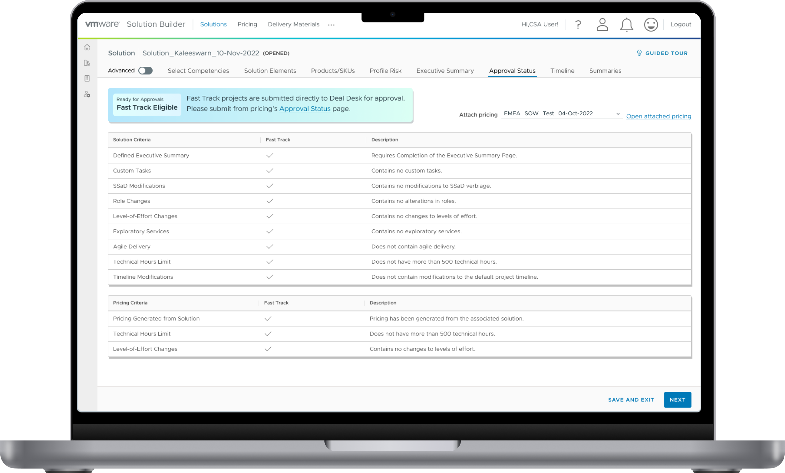
01 / Context
Solution Builder is an internal enterprise platform where CSAs and CSEs build, price, and submit customer deals. Every deal required sign-off from Deal Desk, Delivery Leadership, and Finance Systems & Solutions — and none of that happened inside the tool. Users created Jira tickets, followed up manually, made changes, and repeated the cycle until approved.
The critical detail: the majority of deals were low-risk and only required a single Deal Desk review. But the risk criteria lived with the expert teams, not with the users. Without visibility into those criteria, CSAs and CSEs treated every deal identically — running low-risk solutions through the full expert review cycle by default. The bottleneck wasn't the workflow. It was the missing information.
CSA/CSE, stakeholder interview
"We are not aware of the deal risk level criteria — this is the reason we have to request approval from experts for every single deal."
Starting point. Solution Builder before Fast Track — no eligibility criteria visible, no approval status, no submission path inside the product. Everything happened through Jira and email.
02 / Role
I led the design of Fast Track end-to-end — discovery, research, workflow definition, UX architecture, component design, and post-launch usability testing. I was the lead designer on this feature, working within a larger design team where work was shared regularly for critique. Decisions were mine to make; the team provided feedback throughout.
I collaborated closely with two Product Managers and Engineering. The PMs brokered access to CSA and CSE user groups — I designed the research, ran the sessions, and synthesized findings. I also worked directly with stakeholders from Deal Desk and the expert review teams.
03 / Process
The first step was an empathy map to surface pain points, goals, and needs across CSA and CSE groups. Not for presentation — to give the team a shared picture of where the bottlenecks actually lived before we started talking about solutions.
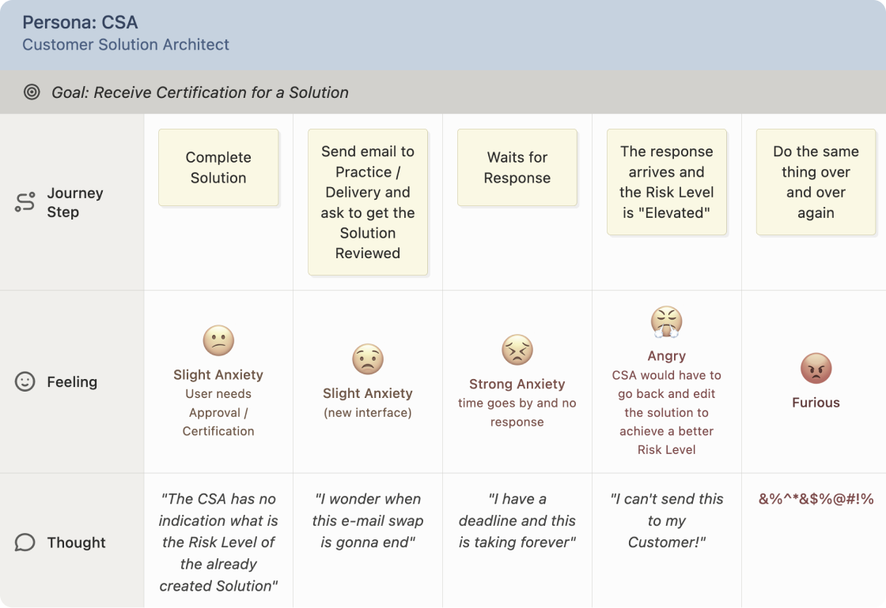
Empathy map. Defined the pain points clearly enough that the team aligned on where to focus — before any solution discussion started.
With the problem defined, we ran a How Might We workshop on Miro with PMs and engineers. The three questions that shaped the roadmap:
From there, I proposed we start with workflow diagrams before wireframes — the approval logic was too complex to resolve in UI. We needed to map every scenario first, get stakeholder and engineering sign-off on the logic, then move into screens.
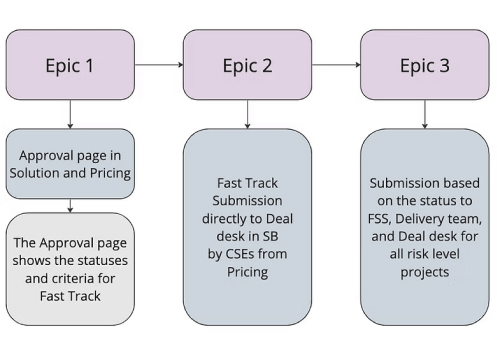
HMW questions sorted by team, narrowed to three priority directions.
Once the concept was approved, I built detailed task-based flow diagrams covering all possible scenarios — different deal types, different risk levels, different user roles. These weren't handoff artifacts. They were the mechanism for getting Engineering to confirm what was buildable and stakeholders to validate what was accurate.
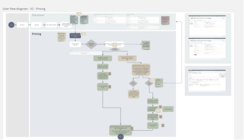
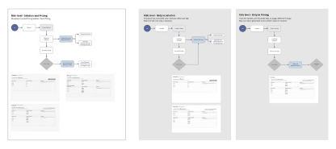
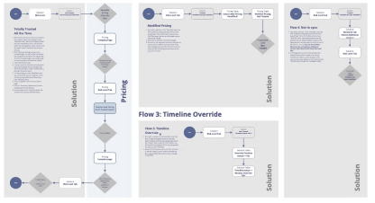
Task-based flows. Most common scenarios.
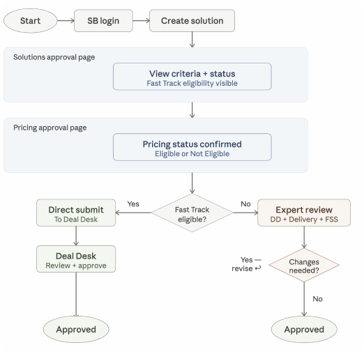
In parallel, we worked through terminology. Status names had legal, operational, and UX implications — getting them wrong would undermine the whole feature. Multiple rounds before landing on language everyone recognised on both sides of the approval.
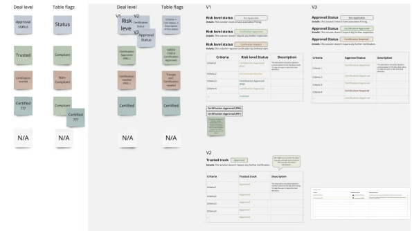
Terminology session. Defined collaboratively because the language had to work for users, reviewers, and legal simultaneously.
With logic and language locked, I moved into blueprint wireframes — defining placement for the status components, criteria table, and action controls.
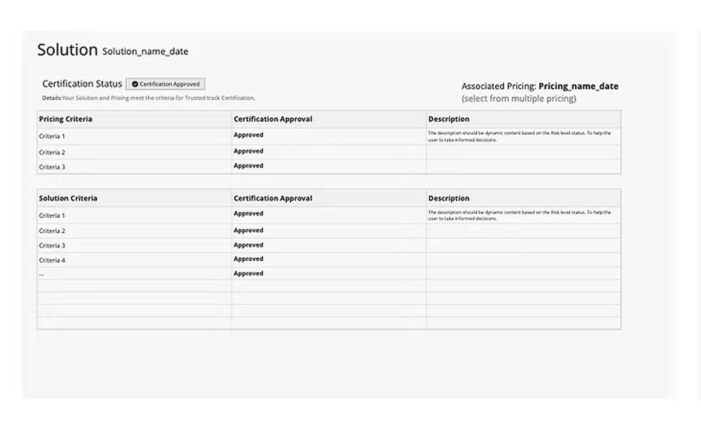
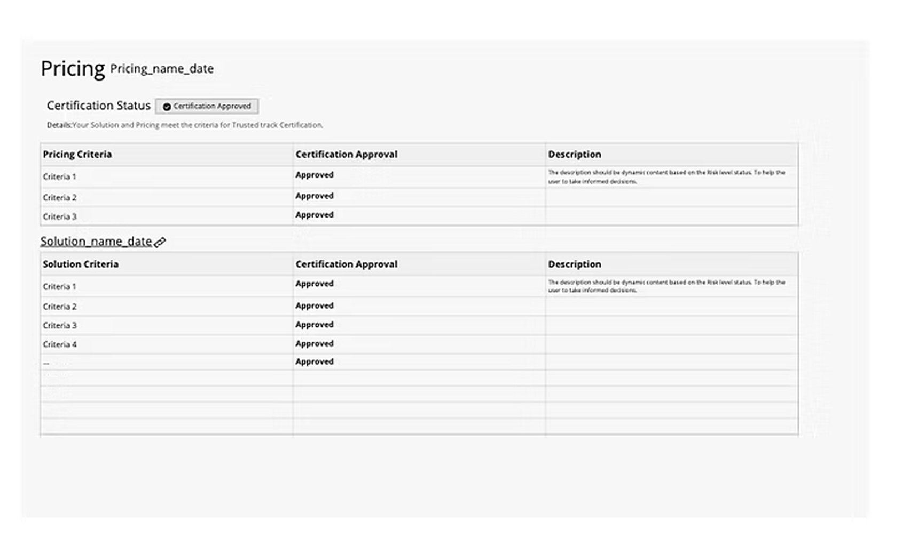
Blueprint wireframes. Layout and component placement defined before visual design.
01 / Make the criteria visible
Approval pages in Solutions and Pricing — Fast Track eligibility status shown directly in the tool using existing design system alert components. No new actions required.
02 / Fix what testing revealed
Pilot launch + usability testing with 6–8 users showed the orange warning state created the wrong read. Users assumed they had made an error. Research drove an iteration — resulting in a new custom component.
03 / Enable direct submission
With the component validated, we added the action layer. Fast Track deals submitted directly from the platform. All deal types — all approvals — inside the tool.
The biggest design challenge wasn't layout — it was the status component. The first version followed PM and stakeholder direction: green for Fast Track Eligible (success in the design system), orange for Fast Track Not Eligible (warning). The logic seemed sound.
My concern was specific: Fast Track Not Eligible isn't an error. It reflects the customer's requirements — complex deals need expert review because they're complex, not because the CSA did something wrong. Orange warning language would frame a valid deal state as a problem. I raised it, but couldn't resolve it in a prototype — the status only made sense with real deal data. We agreed to ship the pilot and test it.
Before — pilot version
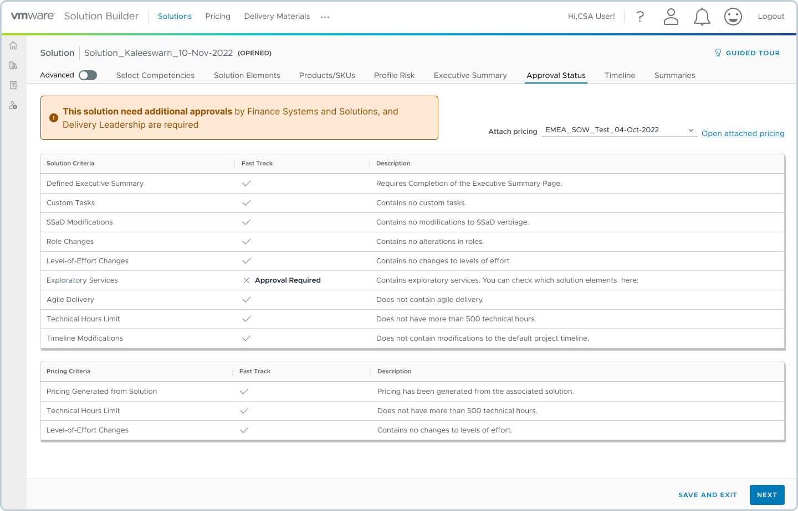
Green/orange binary using existing alert components. Orange read as an error state.
After — redesign
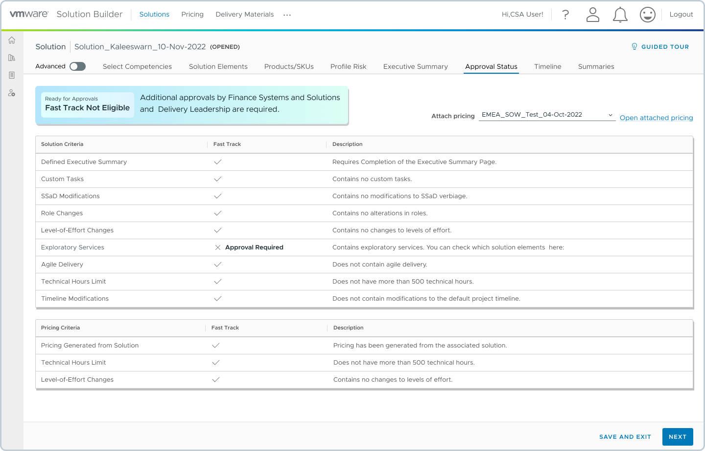
Four states, state-based color logic. Eligible and not-eligible as parallel valid paths.
Usability sessions confirmed it. Most users' first reaction to the orange state: "Did I do something wrong? How do I fix it?" The component needed to be rebuilt from a different premise.
I redesigned around four logical states — not sentiment:
Research synthesis in Dovetail.
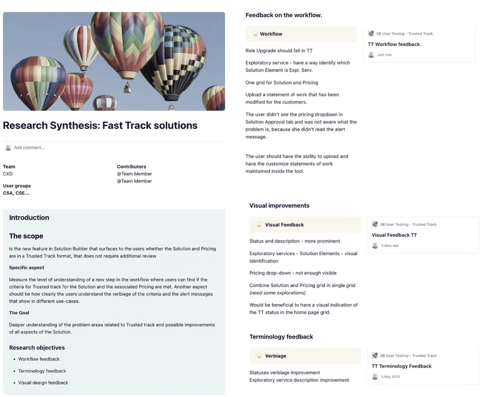
Post-pilot usability sessions with 6–8 CSAs and CSEs — findings drove the component redesign and copy iteration.
The screens show the first phase of delivery — making approval criteria and deal status visible inside the tool for the first time. Phase 2 (direct submission to Deal Desk without leaving Solution Builder) was scoped, designed, and in development at handoff.
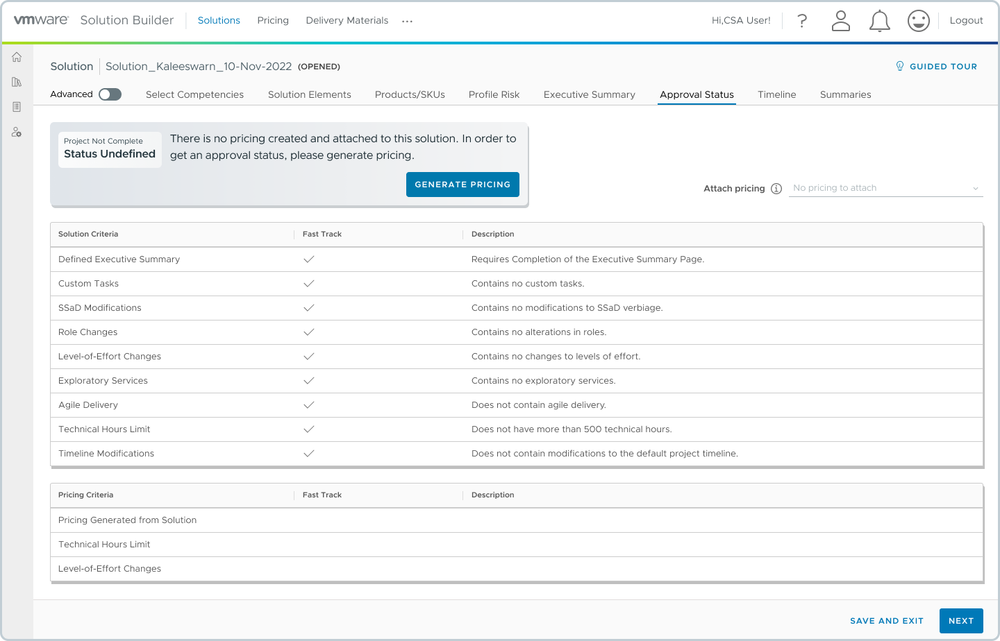
Grey — neutral, no signal. The deal isn't broken, pricing just hasn't been generated yet. One clear CTA moves the user forward.
The same status component — two paths, one system
Neutral blue-grey badge, not orange. This was a deliberate decision — Not Eligible reflects deal complexity, not user error. Warning color would have implied the CSA did something wrong.
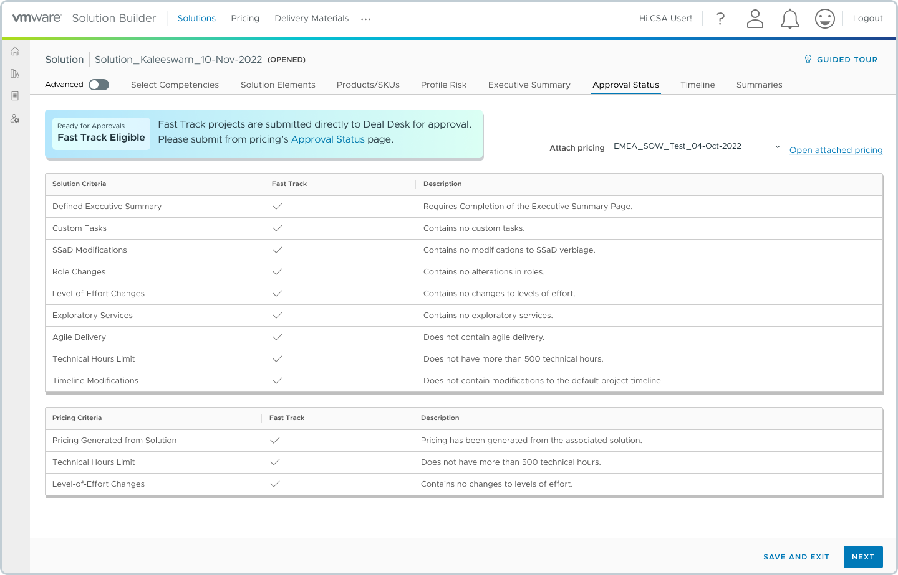
Green badge, positive signal. All criteria met — the table shows exactly why. Next action is explicit: submit directly to Deal Desk.
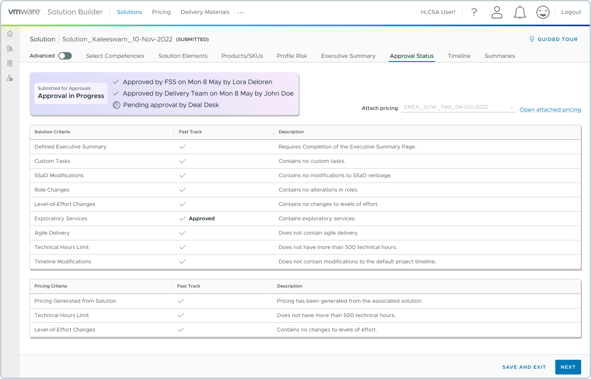
Live approval trail. Two teams approved, one pending. Users know exactly where their deal is without chasing emails or Jira tickets.
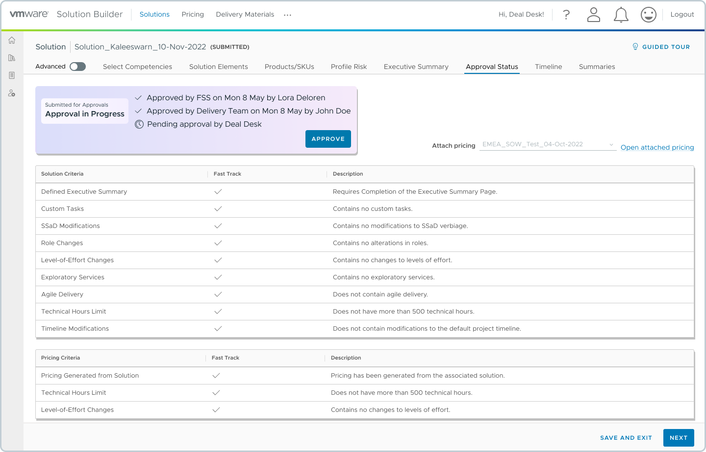
The same moment, from the other side. The Approve button lives inside the tool — no external process, no context switching.
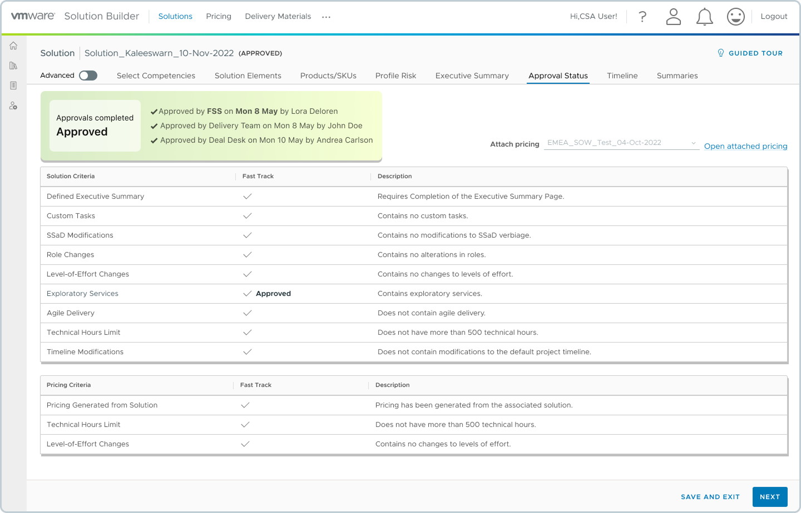
Green — terminal state. Full approval trail visible: who approved and when. Deal is ready to go to the customer.
05 / Collaboration
Research Access
CSAs and CSEs are senior users with high operational load — I couldn't reach them independently. The PMs brokered every interview. I owned the research design, ran the sessions, and synthesized in Dovetail. The findings shifted what the team prioritized — not just documented what users said.
Terminology
Status names had legal, operational, and UX implications simultaneously. PM, Engineering, stakeholders, and I worked through the options on Miro — multiple rounds. Getting five status names agreed across three expert teams isn't a design task. It's systems thinking applied to language.
The Orange/Warning Reversal
I didn't win that argument upfront — and I didn't try to. I named the risk, accepted we'd need live data to resolve it, and built the research plan to catch it post-pilot. When the sessions confirmed the problem, we had clear evidence to drive the redesign. That's the right call when user interpretation can't be predicted from a prototype.
06 / Outcome
−15%
Configuration errors
Adobe Analytics + post-launch research
$1.65M
Annual savings
5,000 deals/yr × 2hrs × $165/hr
1,000+
Users across Sales, Architecture & Operations
CSA, post-launch feedback
"Since we've had the app, we've been able to move twice as many deals in the same amount of time. We're happy, the customers are happy because now we can give them shorter deadlines."
CSE, post-launch feedback
"It helps me a lot to see the status of the deal and thus know what to expect."
CSA, post-launch feedback
"The app saves me time and gives me an overview of the whole process."
What I'd do differently. Push for a co-creation session on the status naming with actual users before the pilot — not just stakeholder review. The terminology was validated internally, but not user-tested. The orange/warning finding was predictable in hindsight. A single session with 3 CSAs pre-launch would likely have caught it and saved an iteration cycle.
Next project
Documaster · Records Management SaaS →